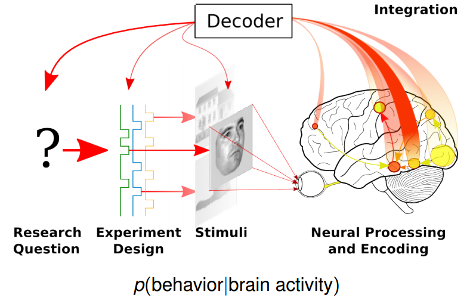

${💕,Understand, Protect} 🧠
https://sinodanish.github.io/
November 29, 2019
Outline
- My background
- Basic Information of Neuroscience
- Advanced Neuroscience Techniques
- Study Brain with fMRI
- Quick Introduce of Master Thesis
My Background


姓名:李强
我来自中国。很高兴可以来到这儿学习！
欢迎大家以后来中国看看！
China Map

Birth at GauSu

兰州拉面
LanZhou Beef Noodles
LanZhou

伏羲庙
FuXi Temple
TianShui

敦煌莫高窟
Mogao Caves
DunHuang
Bachelor Study at HeiLongJiang

索菲亚大教堂
Saint Sophia Cathedral
Harbin

黑龙江大学
Heilongjiang University, HLU
Harbin

冰雕
Ice Festival
Harbin
Master Study at Beijing

The Great Wall
Beijing

University of Chinese Academy of Sciences, UCAS
Beijing

Institute of Biophysics, CAS
Beijing
Master Study in Denmark
Basic Information of Neuroscience
What's the ${Human, Artificial} intelligence? && How the brain works?
${Physical, Intelligence, Energy, stochastic} system
To really understand the brain, we’d need somehow to read the information from millions of individual neurons at once!
The brain is very richly inter-connected.
Adapted from Felleman & Van Essen, 1991
Neural Information Processing

Synapse? (deep learning)
Thorpe et al., 2001
Virtual Brain
Adapted from Eliasmith et al., 2012
Advanced Neuroscience Techniques
Visual neurons of cat
orentation selectivity Properties
Imaging processing-Gabor function
Hubel & Wiesel., 1959

Optogenetics
Adapted from Karl Deisseroth Lab website

MRI
Study Brain with fMRI


Encoding and Decoding Models of Cognition
adapted from Parietal website
$ ipython
demo
In [1]: import cortex
In [2]: ds = cortex.load("S1_retinotopy.hdf")
In [3]: cortex.webshow(ds)
>> matlab live script
demo: open live script
% Input image is segmented gray or white matter with FSL or Spm
>> surf = spm_surf(spm_select(1, 'image', select image data));
% Put statistics images onto render surface
>> mat = spm_render(spm_select(1,'mat','Select mat data'));
Master Thesis
Encoding Analysis
Face Stimulus
Task: judge male or female
Scanning subject brain
Decoding Analysis
$ ipython
In [1]: from sklearn.svm import SVC
In [2]: svm = SVC(C=1., kernel="linear")
In [3]: from sklearn.linear_model import (LogisticRegression,
RidgeClassifier,
RidgeClassifierCV)
In [4]: logistic = LogisticRegression(C=1., penalty="l1", solver='liblinear')
In [5]: ridge = RidgeClassifier()
In [6]: from sklearn.naive_bayes import GaussianNB, BernoulliNB, MultinomialNB
In [7]: gnb = GaussianNB()
In [8]:classifiers = {'SVC': svm,
'log l1': logistic,
'ridge': ridge,
'gnb':gnb}
Classification Reuslt & Learning Curve
References
- Allefeld, Carsten & Haynes, JD. (2015). Multi-voxel Pattern Analysis. Brain Mapping: An Encyclopedic Reference. 1. 641-646.
- Axelrod, V., Rozier, C., Malkinson, T. S., Lehongre, K. & Adam, C. (2019). Face-selective neurons in the vicinity of the human fusiform face area. Neurology. 197–199.
- Belliveau, J. W. et al. (1991). Functional mapping of the human visual cortex by magnetic resonance imaging. Science. 80-82.
- Davies, Graham & HD, Ellis & W. Shepherd, J. (1981). Perceiving and Remembering Faces. The American Journal of Psychology. 96.
- Elliott, S. L., Chu, K. & Coleman, J. (2017). Attitudes about race predict individual differences in face adaptation aftereffects. Vision Res. 141, 237–246.
I'm Done!!! That's all!!! Forget it!!!